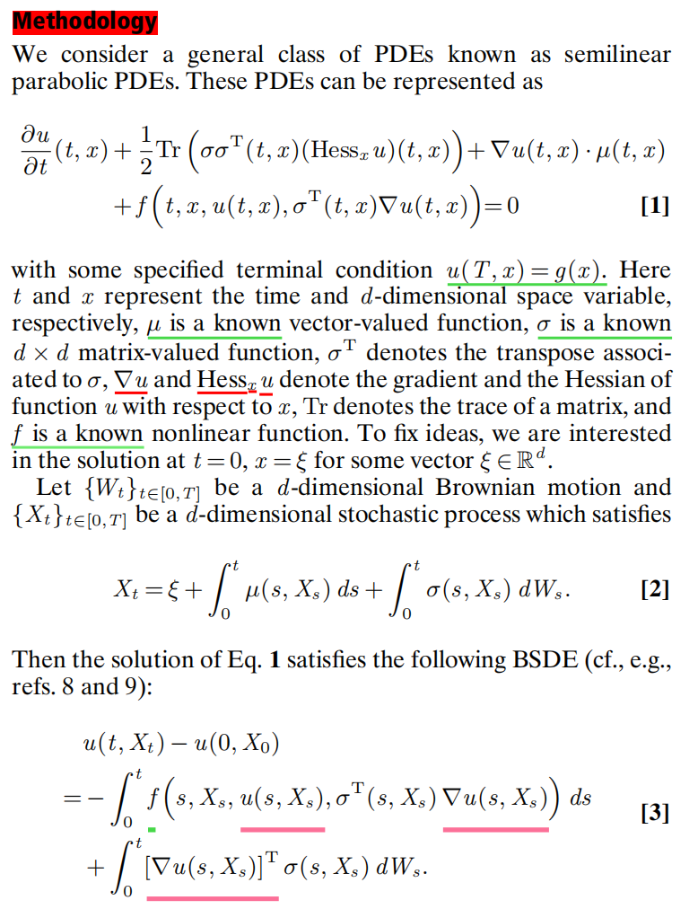
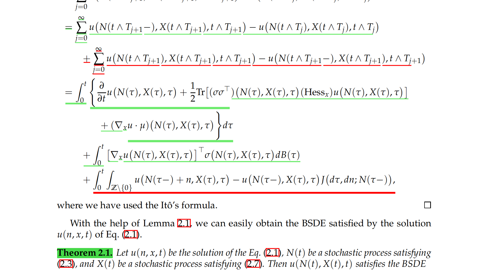
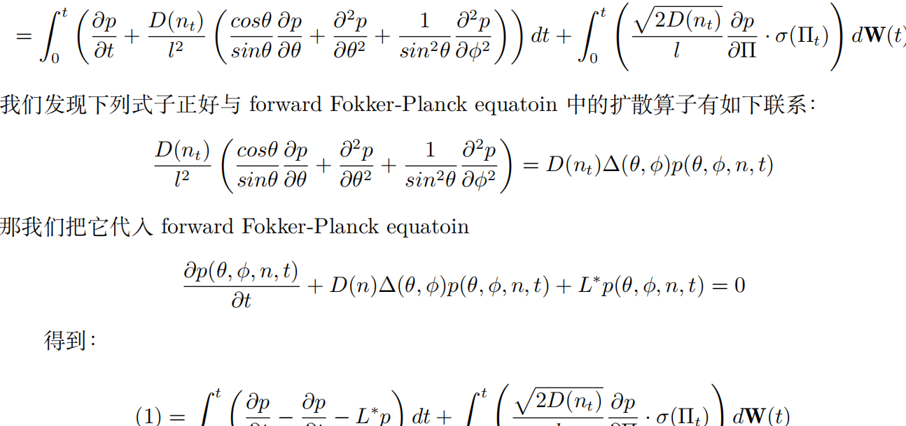
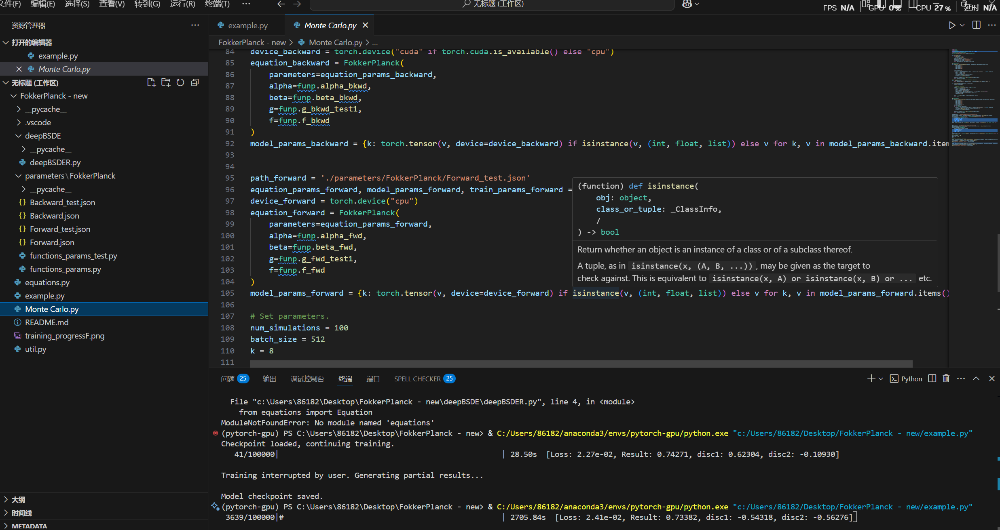
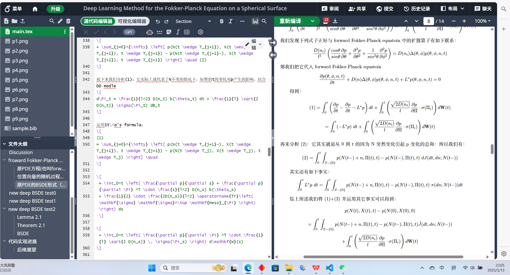

Ver0003的个人主页
我的项目
DL求解Fokker-Planck方程
- 针对生物分子动力学中球面Fokker-Planck方程求解难题,自主设计基于深度BSDE方法的神经网络求解框架,开发了相应蒙特卡洛算法
- 通过完善算法、调整超参数,将模型损失函数稳定收敛至1e-02量级。取得突破性精度:绝对误差0.0014(相对误差5.7%)
- 为解决损失函数较大，不稳定以及数值计算问题,提出球面上BSDE方法,促使模型收敛速度加倍、损失函数趋于正常平缓
- 通过对比分析,验证了BSDE方法在求解Fokker-Planck方程中的有效性
- 预期一篇SCI二区及以上级别的学术论文以及在GitHUb开源完整算法实现与预模型训练





大语言模型DeepTA
- 针对大学数学助教工作压力大效率低问题,兰州大学选拔团队启动DeepTA大语言模型研发项目,旨在实现数学问题自动答疑、作业批改与知识点解析
- 搭建Docker微服务架构、构建学科语料库与分词系统、参与模型微调全流程、清洗大学数学语料、利用LoRA微调,参与设计数学逻辑链强化训练策略
- 项目正在稳步推进
基于YOLOv5的作物识别模型
- 基于YOLOv5设计了农作物与杂草识别模型,通过数据预处理与增强、模型训练与持续优化、功能扩展与应用，实现了高精度目标检测与分类系统
- 通过设计早停、超参数调整使得训练集与测试集的损失函数曲线稳定收敛至0.027。针对其中三种作物，
通过数据增强将模型的均值 F1-Score 提升至 0.92 以上。在IoU阈值设定为 0.5 时,mAP稳定在 0.75 ，满足中等重叠度下的检测精度要求。